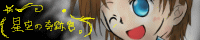
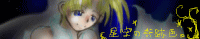

当サイトへのリンクについて。
リンクは、インデックス（一番最初のページ）に貼ってください（´ワ｀*
報告は特に必要ありませんが、頂けると管理人がPCの前で小躍りします←
相互リンクは現在受け付けておりません。
正確に言えば、受け付けていないのは「相互リンクの申請」です。
「リンクしました」との報告があれば、確実にそちらのサイト様にお邪魔しますので、
私が「こちらからもリンクお願いします！」と飛んでいきましたら宜しくお願いします（笑。
ただ、リンク申請をして頂いても、
１００％相互リンクをお返し出来る訳ではありませんので、ご了承下さい。
貼るも剥がすも自由ですので、どうぞお気軽に貼ってやって下さい（´ω｀*
バナーはこちら。直リンクでもお持ち帰りでも大丈夫です。
オールジャンルバナー（直リンク推奨）
シンプルバナー
オリキャラ・カーレッジ原型バナー（笑。
マリスト・ペパマリバナー
メテオスバナー
管理人名・・・ 星詩里音（ほしうたりおん）
ＨＰ名・・・ 星空の奇跡色。
ジャンル・・・ マリオ・メテオス・その他 / 小説・イラスト・擬人化中心
ＨＰＵＲＬ・・・ http://www.geocities.jp/syainstreehouse/index.html
過去のバナー軍。
お気に召したのがありましたら、保存した上でお使い下さっても大丈夫です＾＾*
